俺がドラゴン。 図鑑キャラ・ボス・変身を、ひと目で。
1 遊べるキャラ（10体）
竜だけでなく、勇者・兵隊・ゴーレム・飛空艇でも遊べます。キャラで遊び方が変わります。
空も飛べる、バランス型。炎の息と大火球で、まとめて焼きはらう。
体力 速さ 攻撃
- 左クリック 大火球
大きな火の玉。当たると広く爆発上級技：業火球 → 滅びの業火
- 右クリック 炎の渦
自分のまわりに炎の渦。近くを焼く上級技：炎の大渦 → 紅蓮の嵐
- スペース 突進
前へ体当たり。ふれた敵にダメージ
仲間（最大3体）：小さな赤い竜
いちばん速く、よく曲がる。雷の息を連射し、必殺技は前の敵6体に落雷。体力は少なめ。
体力 速さ 攻撃
- 左クリック 落雷
前の敵6体に雷を落とす上級技：大落雷 → 神鳴り
- 右クリック 放電
自分のまわりの敵に電撃上級技：大放電 → 雷帝の怒り
- スペース 緊急回避
横へすばやくよける
仲間（最大3体）：小さなワイバーン

アースドラゴン
地上を走る・かたい
いちばん硬い力持ち
飛べないが、いちばん硬くて力持ち。建物も体当たりでこわす。必殺技は足ぶみで地面ごと吹きとばす。
体力 速さ 攻撃
- 左クリック 地響き
地面をたたく。まわりの敵を吹きとばす上級技：大地響き → 天地崩し
- 右クリック 岩投げ
岩を3つ投げる。1つは特大上級技：巨岩投げ → 隕石落とし
- スペース 突進
前へ体当たり。ふれた敵にダメージ
仲間（最大3体）：小さな地竜
人間の勇者になって戦う。近くの敵は剣で切り、遠くへは光の斬撃。必殺技は天から光の柱。屋外の金のリングで天馬に30秒乗る。
体力 速さ 攻撃
- 左クリック 光の柱
敵の頭上に光の柱。最大6体上級技：聖なる光柱 → 天の裁き
- 右クリック 回転斬り
ぐるっと回って、まわりを斬る上級技：旋風斬り → 竜巻斬り
- スペース ジャンプ・斬りこみ
前へ斬りこみ、ふれた敵を斬る
仲間（最大3体）：魔法使い・僧侶・弓兵

王国の兵隊
地上・15人と大砲4門
15人と大砲2門の部隊
兵隊15人と大砲4門の部隊を動かす。弓と槍で一斉に攻め、近くは槍でつく。必殺技は大砲の一斉砲撃。体力が減ると人数が減る。
体力 速さ 攻撃
- 左クリック 一斉砲撃
大砲と矢で、敵をいっせいに撃つ上級技：全軍砲撃 → 王国の総力
- 右クリック 矢の雨
ねらった場所へ矢をふらせる上級技：矢の嵐 → 万の矢
- スペース 防御
しばらく、受けるダメージを8割へらす
仲間（最大3体）：弓兵・隊長・兵士
岩でできた巨人。足は遅いが、とても硬い。近くの敵をなぐりとばすのが得意。遠くへは岩を投げる。必殺技は地割れと破壊光線。
体力 速さ 攻撃
- 左クリック 地割れ
前へ岩のトゲがつぎつぎ生える上級技：大地割り → 奈落割り
- 右クリック 破壊光線
長い光線で、直線の敵をつらぬく上級技：超破壊光線 → 滅びの光
- スペース 防御
しばらく、受けるダメージを8割へらす
仲間（最大3体）：小さな岩人形

オークキング
大槌の人型・リングで戦車に30秒
人型は近接、戦車は砲撃
人型では近くの敵を大槌で打つ。金のリングをくぐると30秒間デラックス戦車に乗り、小砲弾を自動で撃つ。時間切れで人型に戻り、必殺技も元に戻る。
- 人型の通常攻撃 大槌で近くの敵を殴る
- 人型の必殺技① 大槌の横なぎ
周りの敵を一度に打ち払う - 人型の必殺技② 大槌のたたき割り
前方をたたき、直線上の敵を巻きこむ - 戦車の通常攻撃 前の敵へ小砲弾を撃つ
- 戦車の必殺技① 大砲3連発
- 戦車の必殺技② とげの突撃
- スペース／③ 人型は身を守る、戦車は装甲かため
入れ替えた技と強化は形態ごとに保持。仲間はオーク将軍。
王国の飛空艇に乗って戦う。大砲を前の敵へ撃ち続ける。必殺技は真下への爆弾の雨と、全砲門の一斉射撃。スペースで横によけながら後ろを向く。
体力 速さ 攻撃
- 左クリック 爆弾の雨
下と前へ爆弾をつぎつぎ落とす上級技：爆弾の嵐 → じゅうたん爆撃
- 右クリック 全砲門斉射
左右の大砲で、敵をいっせいに撃つ上級技：乱れ撃ち → 空の要塞
- スペース 回避・急旋回
高さを保って横によけながら後ろを向く。左右入力でよける方向を選べる
仲間：レア札1枚で飛空艇5隻の船団が加わる。最大3船団・15隻。V字編隊で飛び、小さな砲弾で援護する。
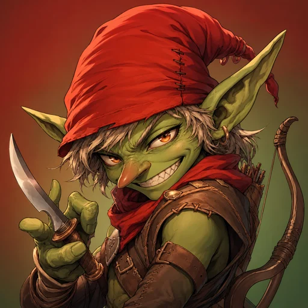
レッドキャップ
地上・弓とナイフ
赤い帽子の小さな弓使い
赤い帽子の小さなゴブリン。足が速く、体力はいちばん少ない。遠くは弓、近くはナイフ。スペースでジャンプ、空中でもう一度押すと前転で避ける。屋外の金のリングで鷹に30秒乗る。
体力 速さ 攻撃
- 左クリック 矢の雨
前の広い範囲に、矢をどっさり降らせる - 右クリック 影走り
少しの間すごく速く走り、通った敵を斬る - スペース ジャンプ・前転
ジャンプする。空中でもう一度押すと、前へ転がって避ける
仲間（最大3体）：ゴブリン・鷹乗り
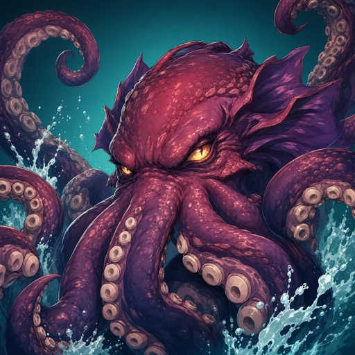
クラーケン
海も陸も・触手
触手を伸ばす海の主の大ダコ
海の主の大ダコ。足は遅いが体力が多く、海では速く泳ぐ。触手をびゅっと伸ばして、遠くの敵も空の敵も打つ。近くはぐるっとなぎはらう。スペースで触手を刺して、体を一気に引きよせる。
体力 速さ 攻撃
- 左クリック 大うず
まわりの敵を引きよせて回し、最後にたたく - 右クリック 八本たたき
8本の触手を、前の広い範囲へ次々にたたきつける - スペース 触手ひき
前へ触手をのばして刺し、体を一気に引きよせる。通り道の敵にダメージ
仲間（最大3体）：サメ・魚人
2 ボス
シナリオごとの、立ちはだかるボス。変身するボスには、ひとこと添えています。

1地下の迷宮
前世は人間。女神の罰で竜に生まれ変わり、迷宮の奥の魔王を目指す。
人間の勇者
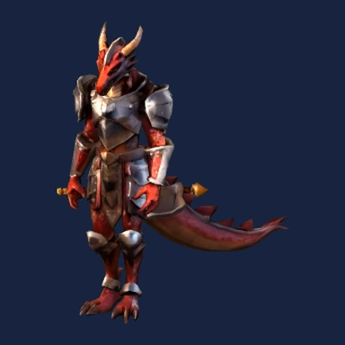
迷宮の番人

岩の巨人ゴーレム
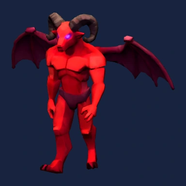
魔王封印の奥にいる

2王国編
人間の王国との戦い。国境の町から王都へ、嵐の海の艦隊まで。
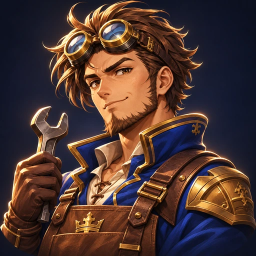
王国の技師の新兵器
伝説の勇者
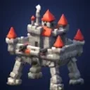
うごく城
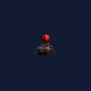
巨大戦艦と空中戦艦
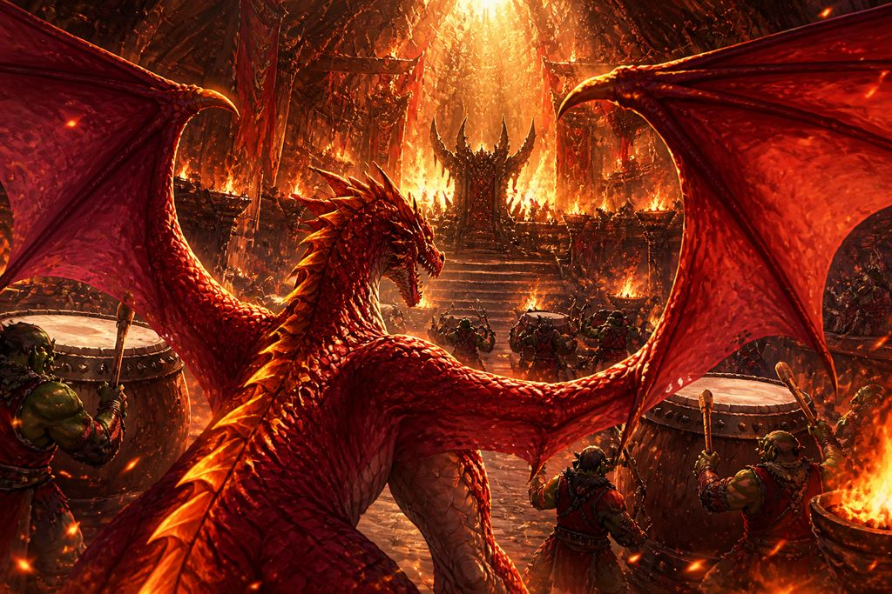
3オークキング編
オークとゴブリンの大軍。木の砦をこえて、オークキングを討つ。
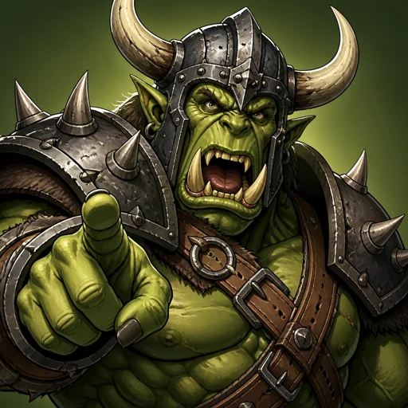
オーク将軍
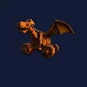
木造の竜
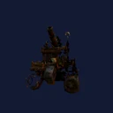
木の巨大戦車
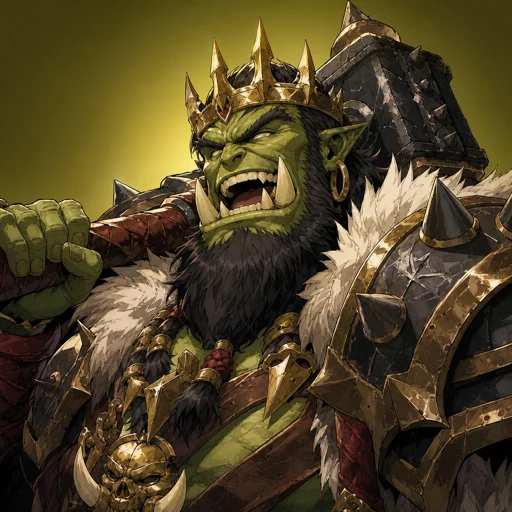
オークキング倒すと、デラックス戦車に乗りかえる
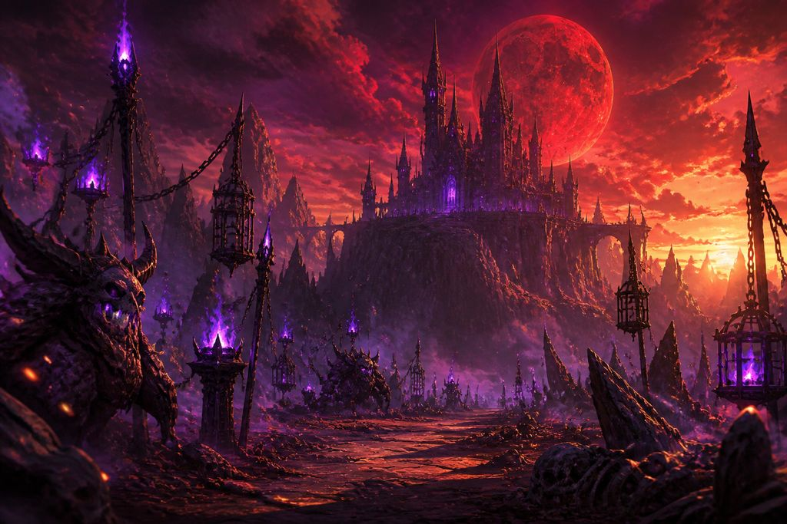
4魔王討伐編
魔界の門をやぶり、骨の荒野をこえて、魔王の城へ。
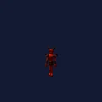
悪魔の将軍
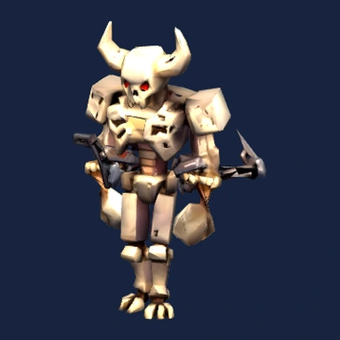
骨の巨人王
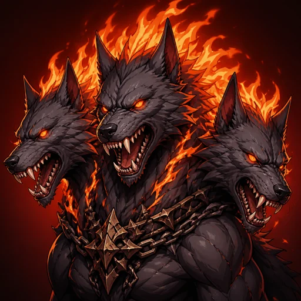
ケルベロス
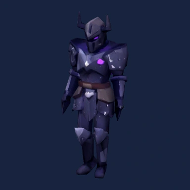
黒い騎士
魔王
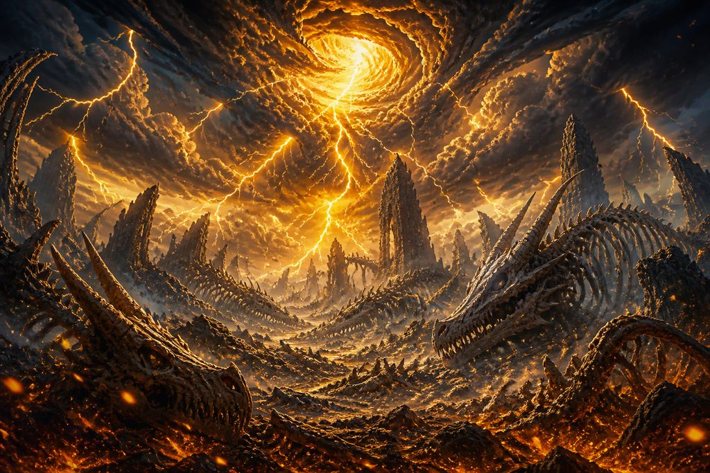
5竜王編
空の強者をめぐる戦い。山より大きい竜王が待つ。
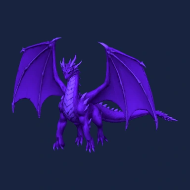
ブラックドラゴン

古の竜

竜王
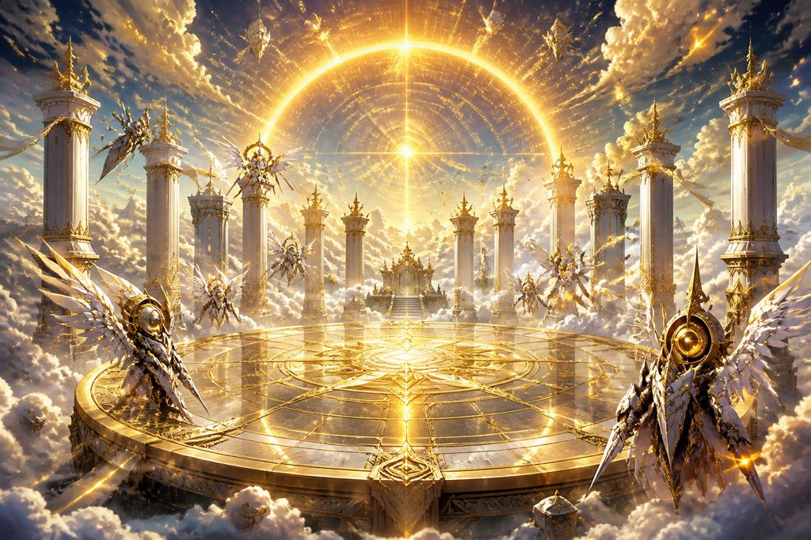
6天使編
雲の上からおりてきた、天の軍勢との戦い。
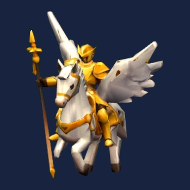
天馬騎士団長
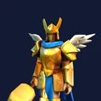
天使将軍
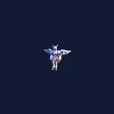
守護天使長
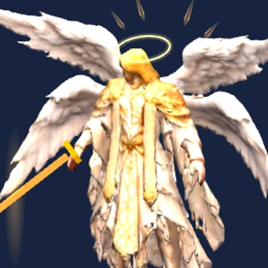
大天使巨兵を呼び出す
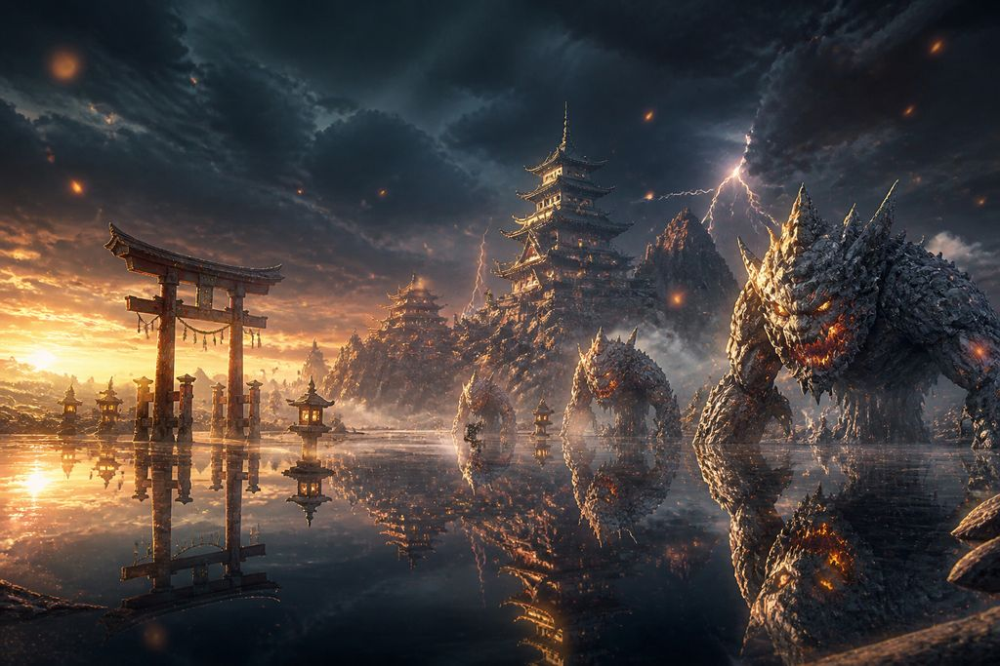
7海王編
海の主・海王の軍勢との戦い。さんごの海から、嵐の海へ。
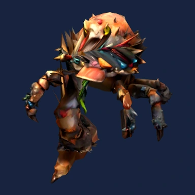
さんごの大ガニ
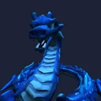
リヴァイアサン
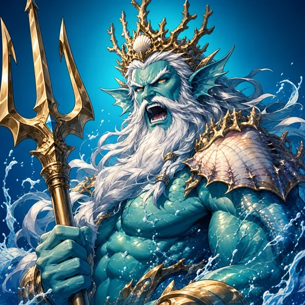
海王人の姿から、巨大な姿に変わる
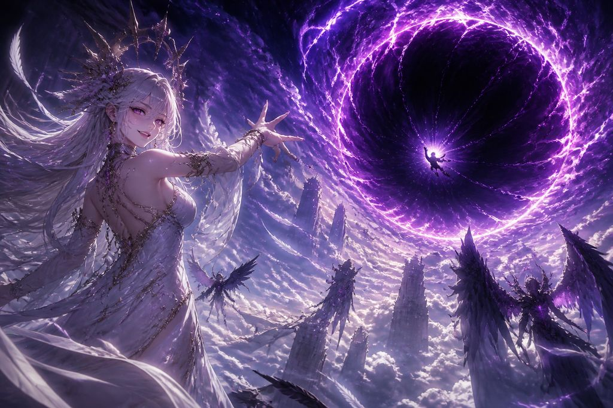
8並行世界編
竜が、鉄と煙の世界、ネオンの都、太古の森、土偶の超文明都市、四次元の格子へ飛ばされる。
- ✈️
大型爆撃機
- 🛡️
超重戦車「陸の戦艦」
- 🚂
装甲列車「鉄のムカデ」
- 🦾
重装ロボ隊長
- 🏙️
都市統括機
- 🛸
巨大UFO
- 🦏
三本角の長
- 🦖
暴君竜
- 🦣
大マンモス
- ☀️
太陽の王
- 🟦
合体獣キューブ巨人にも竜にも組みかわる
- ◆
管理者
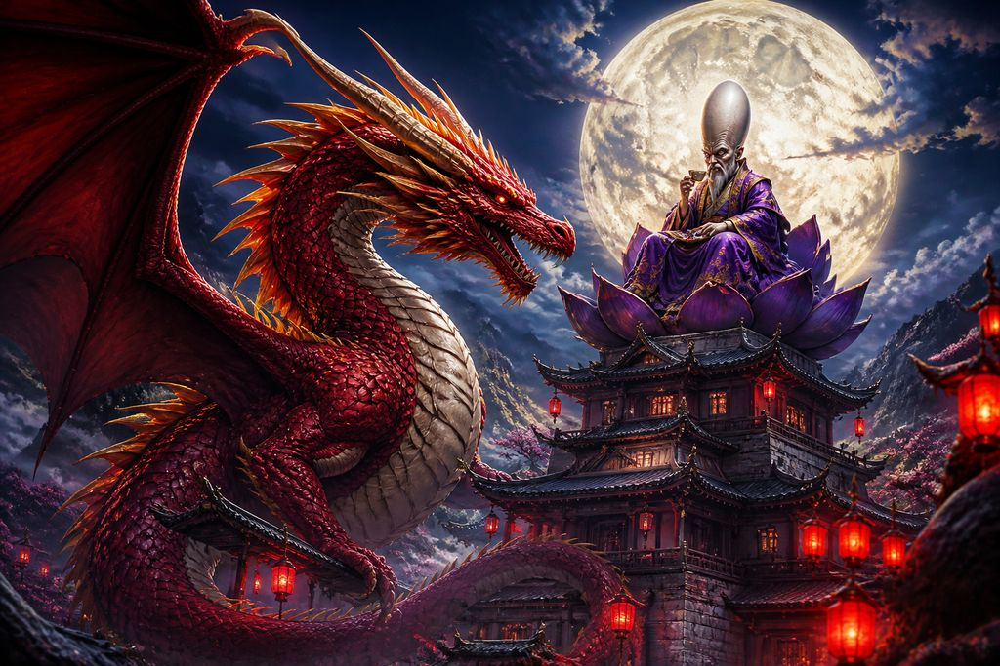
9ぬらりひょん編
妖怪の島国。城下町から天守へ、妖怪の総大将にいどむ。
3 追加キャラとこれからの案
「リング変身」のキャラは遊べます。金のリングで変身し、時間切れで元の姿に戻ります。最終形態中にリングを取ると残り30秒に戻ります。簡単モードでも同じルールです。
予定大天使
- 遊び方 光の力で戦う空の戦士。
- 変身 光の巨人を、数秒のあいだ呼び出す。
- 仲間 なし（巨人が助っ人）
予定
竜騎士
- 遊び方 竜にまたがる騎士団。8騎の編成でいっしょに動く。
- 変身 なし
- 仲間 8騎そのものが仲間
リング変身海王
- 遊び方 海の王。大波と水の力で戦う。
- 変身 金のリングをくぐると、超大型の姿に30秒変身。
- 仲間 魚や海の兵
リング変身ゴブリンキング
- 遊び方 小さな王。手下を引きつれて暴れる。
- 変身 金のリングをくぐると、戦車に30秒変身。
- 仲間 ゴブリンの手下
予定✈️
大型爆撃機
- 遊び方 空の重爆撃機。マシンガンをのせて、地上をなぎはらう。
- 変身 なし
- 仲間 戦闘機
予定🛸
UFO
- 遊び方 空に浮かぶ円盤。光線で攻める。
- 変身 屋外の金のリングで着陸し、大型ロボに30秒変形。時間切れで円盤に戻って離陸する。
- 仲間 ドローン
リング変身
巨大化する魔法使い
- 遊び方 魔法で遠くから攻める。
- 変身 金のリングをくぐると30秒巨大化。杖と魔法の弾が強くなる。
- 仲間 勇者・戦士・僧侶
リング変身🟦
合体キューブ
- 遊び方 立方体がつながった不思議な生き物。
- 変身 リング1個目で人型に60秒合体。合体中の次のリングで竜型に30秒合体。
- 仲間 小さな立方体
リング変身魔王
- 遊び方 闇の力を使う王。
- 変身 リング1個目で牛の魔物に60秒変身。変身中の次のリングで黒い煙の魔人に30秒変身。
- 仲間 闇の手下
予定巨大スライム
- 遊び方 ぷるぷるの巨体。ぶつかって広がる。
- 変身 なし（ぶんれつ・合体は考え中）
- 仲間 小さなスライム
リング変身竜王
- 遊び方 山より大きな竜の王。
- 変身 人の姿から始まり、金のリングで巨大な竜に30秒変身。
- 仲間 竜の子分
予定
ネクロマンサー（候補）
- 遊び方 倒した敵を、骸骨の兵に変える。画面がごちゃつかないよう、数に上限をつける。
- 変身 なし
- 仲間 倒した敵の骸骨兵
4 変身の一覧
戦いの途中で、姿が変わるボスたち。
今ある変身
巨大魔術師一騎打ちで体力が減ると、巨大化する巨大化したあとは、歩いて近づき、なぐってくる
海王人の姿 → 海へ飛びこみ、巨大な姿に変身のとき、水柱と光が上がる
オークキング倒すと、デラックス戦車に乗って出てくるこの戦車は、プレイヤーも使える
- 🟦
合体獣キューブ巨人 ⇔ 竜に、組みかわるばらばらにくずれると、体力が少し戻る
大天使戦いの途中で、光の巨兵を呼ぶ
追加キャラの変身
- 海王金のリング → 超大型（30秒）
- ゴブリンキング金のリング → 戦車（30秒）
- UFO金のリングで 円盤 → 大型ロボ（30秒）
- 巨大化する魔法使い金のリング → 巨大化（30秒）
- 合体キューブリング → 人型（60秒）→ 次のリングで竜型（30秒）
- 魔王リング → 牛の魔物（60秒）→ 次のリングで黒い煙の魔人（30秒）
- 竜王金のリング → 巨大な竜（30秒）
ゲームで遊ぶ